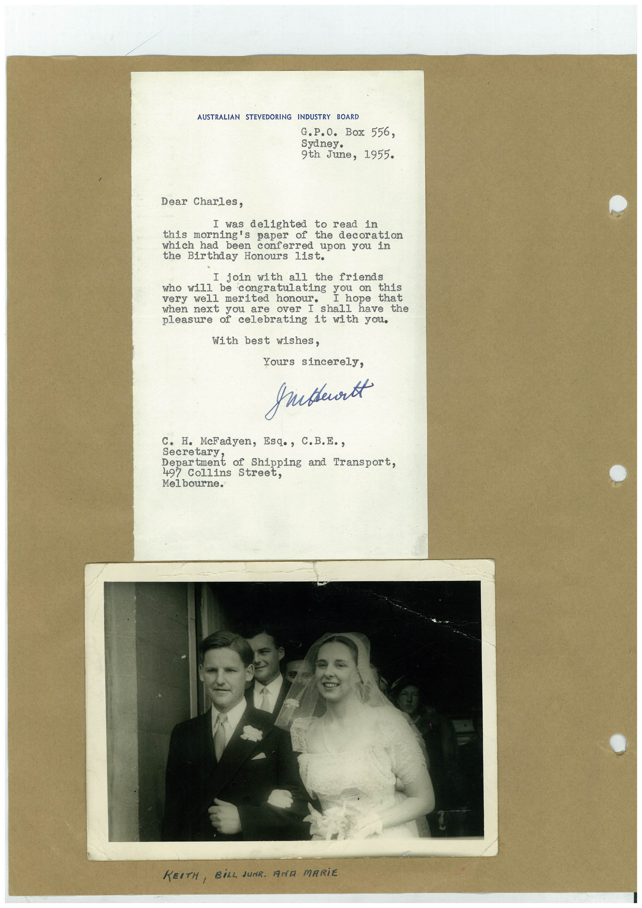

Book 1 · scan 114


Description
Transcription
Context
Review notes
Compare the machine draft with the scan. Handwriting and names need human review.
Artifacts
Edit the artifacts field in this note’s frontmatter to change these records. This summary is generated.
B01-S114-A01 — Letter & Photo — Book 1, scan 114
Types: Typed document, Letter, Photo
Scope: Whole scanned page; individual items can be split out during review.
Caption: Not mapped yet.
Caption source: Not recorded yet.
Caption status: unmapped
Machine transcription
AUSTRALIAN STEVEDORING INDUSTRY BOARD G.P.O. Box 556, Sydney. 9th June, 1955. Dear Charles, I was delighted to read in this morning's paper of the decoration which had been conferred upon you in the Birthday Honours list. I join with all the friends ho will be congratulating you on this very well merited honour. I hope that when next you are over I shall have the pleasure of celebrating it with you. With best wishes, Yours sincerely, grubbertt c. H. McFadyen, Esq., C.B.E., secretary. Department of Shipping and Transport. 497 Collins Street, Melbourne. KEITH, BİLL SUNR. ANA MARiE